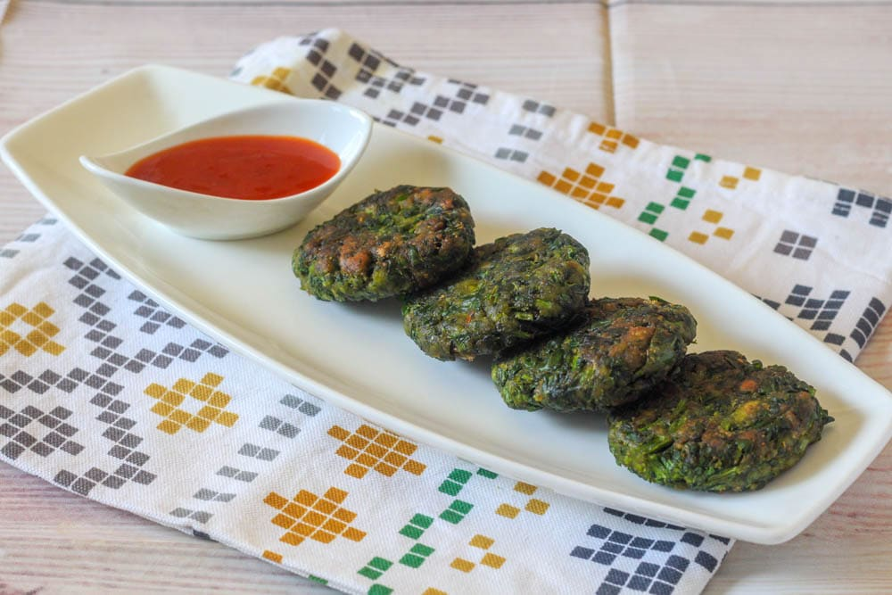
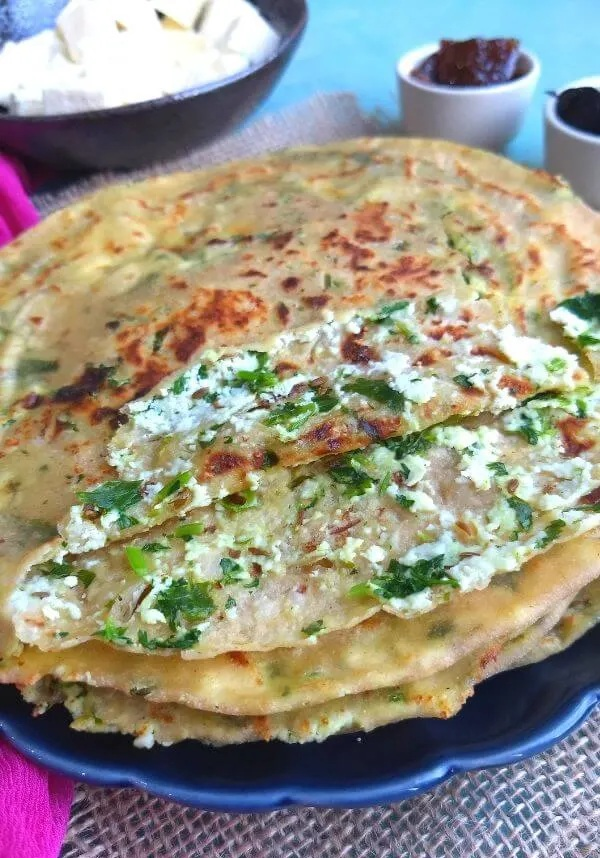
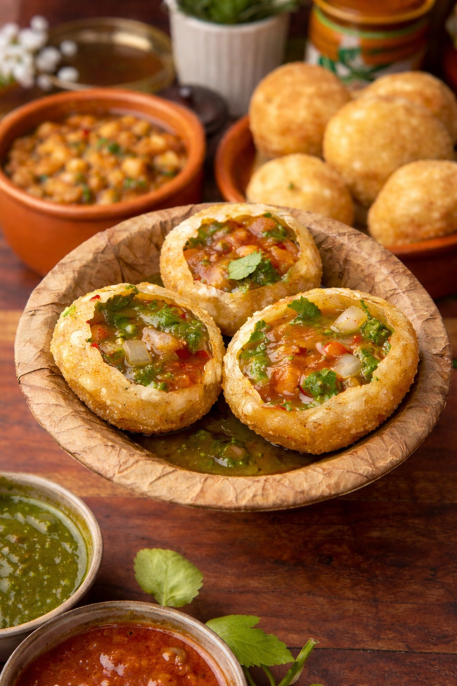

Delicious Homemade Recipes
Simple • Healthy • Tasty


Palak Tikki
Crispy spinach patties blended with potatoes, spices, and herbs — a healthy evening snack.
View Recipe
Chatpata Aloo Roll
Chatpata Aloo Roll is an easy, tasty, and kid-friendly snack made using soft chapatis 🫓 and a mildly spiced potato filling 🥔. Perfect for lunch boxes 🎒, evening snacks ☕, or quick meals.
View Recipe

Paneer Paratha (Stuffed)
Soft paneer-stuffed paratha 🫓 with mild spices 🌿—perfect for breakfast 🍳, tiffins 🎒, or a simple homemade meal 🧈.
View Recipe
